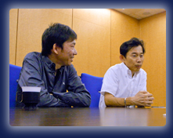

---
『黄金の太陽 失われし時代』から実に8年ぶりとなりますが、開発のきっかけは？
高橋（宏）
気運が高まっていたというか……（笑）。
佐藤
海外を含め、任天堂社内でも待望されていたという感じがあります。
高橋（秀）
作らなきゃ、と思うことはたびたびあったんですけど。
---
シリーズとしては完結したというお気持ちだったんですか？
高橋（宏）
いや、全然そんなつもりはなかったです！
高橋（秀）
前の2作は、むしろ序章くらいのつもりで（笑）。
高橋（宏）
たとえば西洋では「錬金術」が科学の法則として考えられていた時代がありましたが、扉を開けたらそういう世界だったという物語があってもいいじゃないかと。その世界の扉を開くというのが前2作の位置づけです。
その後どうなるのか、自分でも見てみたい部分がありました。でも正直に言うと、前2作でものすごくパワーを使っちゃったんです（苦笑）。
その後どうなるのか、自分でも見てみたい部分がありました。でも正直に言うと、前2作でものすごくパワーを使っちゃったんです（苦笑）。

高橋（秀）
戦闘とイベントがすべて同時進行で起きるゲームなので、水面下で相当足をバタバタさせていましたよ（笑）。プログラム的にも、グラフィック的にも、企画的にも、シナリオ的にもパワーを使いました。
佐藤
私たちもキャメロットさんにお願いするとなると、ハードの限界を引き出してもらえると期待するところもありますから（笑）。
高橋（秀）
それで続編となると、さらにすべての面でパワーアップしたものが当然期待されます。それにお応えするのは、すぐには難しかったわけです。任天堂さんのゲームは、「誰でも乗れるF1カー」のような、高性能なんだけど人当たりは柔らかいようなところが共通しているし、そういうものにしないといけないという想いもありました。
---
キャメロットさんは、これまでどんなゲームを作られていた会社なんでしょうか？
高橋（宏）
任天堂さんとは98年ごろ、NINTENDO64の時に、『マリオゴルフ64』（※1）を作ったのが最初ですね。当初、RPGの制作をということだったんですが、まずゴルフゲームを作ってNINTENDO64の開発ノウハウを得ようということになって。
※1
『マリオゴルフ64』＝1999年6月11日にNINTENDO64用ソフトとして発売されたゴルフゲーム。
---
『マリオゴルフ』シリーズの次は、『マリオテニス』シリーズ（※2）を開発されていますね。
※2
『マリオテニス』シリーズ＝NINTENDO64『マリオテニス64』、ゲームボーイカラー『マリオテニスGB』、ニンテンドーゲームキューブ『マリオテニスGC』、ゲームボーイアドバンス『マリオテニスアドバンス』、Wii『Wiiであそぶ マリオテニスGC』の一連の作品をさす。
高橋（宏）
はい。もともと、コンピューターゲームにして一番面白いスポーツは「ゴルフ」と「テニス」だと、ずっと考えていたんです。マリオが主人公でスポーツゲームなら、ゴルフはお父さん、テニスはお母さんが主人公になれて、家族みんなで楽しめるんじゃないかという想いもありましたし。ラリーを簡単に続けられるようなゲームにしたんです。

高橋（秀）
そのおかげで、テニスというゲームが本来持っている戦略的な部分に専念できるので、かえってうまくテニスを表現できたんじゃないかなと思います。
そんなこんなで、ずっと先のばしになっていたRPGが、『黄金の太陽』シリーズ（※3）として、ゲームボーイアドバンスで陽の目を見ることになったわけです。
※3
『黄金の太陽』シリーズ＝キャメロット製作のファンタジーRPGシリーズ作品。前2作は『黄金の太陽 開かれし封印』（2001年8月）、『黄金の太陽 失われし時代』（2002年6月）で、どちらもゲームボーイアドバンス用として発売。本作『黄金の太陽 漆黒なる夜明け』は、前作から30年後の世界を舞台としている。
---
もともと作りたかったRPGということで、期するところもあったのでしょうか？
高橋（宏）
ええ。プレッシャーもありましたが、モチベーションは高かったです。それまでにない、ずっとあたためてきたものがあって、それが今回でも登場する「エナジー」のシステムでした。
プレイレポート |
|
開発スタッフインタビュー |
1. 8年ぶりの続編 |